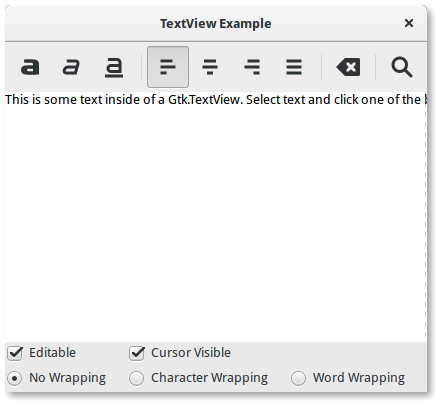

15. Editor de Texto Multilinha¶
O widget Gtk.TextView pode ser usado para exibir e editar grandes quantidades de texto formatado. Como o Gtk.TreeView, ele possui um design de modelo/visualização. Neste caso, o Gtk.TextBuffer é o modelo que representa o texto que está sendo editado. Isto permite que dois ou mais widgets Gtk.TextView compartilhem o mesmo Gtk.TextBuffer, e permite que os buffers de texto sejam exibidos de forma ligeiramente diferente. Ou você pode manter vários buffers de texto e optar por exibir cada um deles em momentos diferentes no mesmo widget Gtk.TextView.
15.1. A Visualização¶
O Gtk.TextView é o frontend com o qual o usuário pode adicionar, editar e excluir dados textuais. Eles são comumente usados para editar várias linhas de texto. Ao criar um Gtk.TextView ele contém seu próprio padrão Gtk.TextBuffer, que você pode acessar através do método Gtk.TextView.get_buffer().
Por padrão, o texto pode ser adicionado, editado e removido da Gtk.TextView. Você pode desabilitar isso chamando Gtk.TextView.set_editable(). Se o texto não for editável, você geralmente deseja ocultar o cursor de texto com Gtk.TextView.set_cursor_visible() também. Em alguns casos, pode ser útil definir a justificação do texto com Gtk.TextView.set_justification(). O texto pode ser exibido na borda esquerda, (Gtk.Justification.LEFT), na extremidade direita (Gtk.Justification.RIGHT), centralizado (Gtk.Justification.CENTER), ou distribuído em toda a largura (Gtk.Justification.FILL).
Outra configuração padrão do widget Gtk.TextView é que linhas longas de texto continuarão horizontalmente até que uma quebra seja inserida. Para encapsular o texto e impedir que ele saia das bordas da tela, chame Gtk.TextView.set_wrap_mode().
15.2. O Modelo¶
O Gtk.TextBuffer é o núcleo do widget Gtk.TextView e é usado para armazenar qualquer texto que esteja sendo exibido na Gtk.TextView. Definir e recuperar o conteúdo é possível com Gtk.TextBuffer.set_text() e Gtk.TextBuffer.get_text(). No entanto, a maior parte da manipulação de texto é realizada com iteradores, representados por um Gtk.TextIter. Um iterador representa uma posição entre dois caracteres no buffer de texto. Iteradores não são válidos indefinidamente; sempre que o buffer é modificado de uma maneira que afeta o conteúdo do buffer, todos os iteradores pendentes se tornam inválidos.
Por causa disso, os iteradores não podem ser usados para preservar posições nas modificações do buffer. Para preservar uma posição, use Gtk.TextMark. Um buffer de texto contém duas marcas internas; uma marca “insert” (que é a posição do cursor) e a marca “selection_bound”. Ambos podem ser recuperados usando Gtk.TextBuffer.get_insert() e Gtk.TextBuffer.get_selection_bound(), respectivamente. Por padrão, a localização de um Gtk.TextMark não é mostrada. Isso pode ser alterado chamando Gtk.TextMark.set_visible().
Existem muitos métodos para recuperar um Gtk.TextIter. Por exemplo, Gtk.TextBuffer.get_start_iter() retorna um iterador apontando para a primeira posição no buffer de texto, enquanto Gtk.TextBuffer.get_end_iter() retorna um iterador apontando após o último caractere válido. A recuperação dos limites do texto selecionado pode ser obtida chamando Gtk.TextBuffer.get_selection_bounds().
Para inserir texto em uma posição específica use Gtk.TextBuffer.insert(). Outro método útil é Gtk.TextBuffer.insert_at_cursor() que insere texto onde quer que o cursor esteja posicionado no momento. Para remover partes do buffer de texto, use Gtk.TextBuffer.delete().
Além disso, Gtk.TextIter pode ser usado para localizar correspondências textuais no buffer usando Gtk.TextIter.forward_search() e Gtk.TextIter.backward_search(). Os iters inicial e final são usados como ponto de partida da pesquisa e avançam/retrocedem dependendo dos requisitos.
15.3. Tags¶
O texto em um buffer pode ser marcado com tags. Uma tag é um atributo que pode ser aplicado a um intervalo de texto. Por exemplo, uma tag pode ser chamada de “negrito” e tornar o texto dentro da tag em negrito. No entanto, o conceito de tag é mais geral do que isso; as tags não precisam afetar a aparência. Eles podem afetar o comportamento de pressionamentos de mouse e de tecla, “bloquear” um intervalo de texto para que o usuário não possa editá-lo ou inúmeras outras coisas. Uma tag é representada por um objeto Gtk.TextTag. Um Gtk.TextTag pode ser aplicado a qualquer número de intervalos de texto em qualquer número de buffers.
Cada tag é armazenada em Gtk.TextTagTable. Uma tabela de tags define um conjunto de tags que podem ser usadas juntas. Cada buffer tem uma tabela de tags associada a ele; somente tags dessa tabela de tags podem ser usadas com o buffer. No entanto, uma única tabela de tags pode ser compartilhada entre vários buffers.
Para especificar que algum texto no buffer deve ter uma formatação específica, você deve definir uma tag para manter as informações de formatação e, em seguida, aplicar essa tag à região do texto usando Gtk.TextBuffer.create_tag() e Gtk.TextBuffer.apply_tag():
tag = textbuffer.create_tag("orange_bg", background="orange")
textbuffer.apply_tag(tag, start_iter, end_iter)
A seguir estão alguns dos estilos comuns aplicados ao texto:
- Cor de fundo (propriedade “background”)
- Cor de primeiro plano (propriedade “foreground”)
- Sublinhado (propriedade “underline”)
- Negrito (propriedade “weight”)
- Itálico (propriedade “style”)
- Tachado (propriedade “strikethrough”)
- Justificação (propriedade de “justification”)
- Tamanho (propriedades “size” e “size-points”)
- Quebra automática de texto (propriedade “wrap-mode”)
Você também pode excluir tags particulares posteriormente usando Gtk.TextBuffer.remove_tag() ou excluir todas as tags em uma determinada região chamando Gtk.TextBuffer.remove_all_tags().
15.4. Exemplo¶
1 2 3 4 5 6 7 8 9 10 11 12 13 14 15 16 17 18 19 20 21 22 23 24 25 26 27 28 29 30 31 32 33 34 35 36 37 38 39 40 41 42 43 44 45 46 47 48 49 50 51 52 53 54 55 56 57 58 59 60 61 62 63 64 65 66 67 68 69 70 71 72 73 74 75 76 77 78 79 80 81 82 83 84 85 86 87 88 89 90 91 92 93 94 95 96 97 98 99 100 101 102 103 104 105 106 107 108 109 110 111 112 113 114 115 116 117 118 119 120 121 122 123 124 125 126 127 128 129 130 131 132 133 134 135 136 137 138 139 140 141 142 143 144 145 146 147 148 149 150 151 152 153 154 155 156 157 158 159 160 161 162 163 164 165 166 167 168 169 170 171 172 173 174 175 176 177 178 179 180 181 182 183 184 185 186 187 188 189 190 191 192 193 194 195 196 197 198 199 200 201 202 203 | import gi
gi.require_version('Gtk', '3.0')
from gi.repository import Gtk, Pango
class SearchDialog(Gtk.Dialog):
def __init__(self, parent):
Gtk.Dialog.__init__(self, "Search", parent,
Gtk.DialogFlags.MODAL, buttons=(
Gtk.STOCK_FIND, Gtk.ResponseType.OK,
Gtk.STOCK_CANCEL, Gtk.ResponseType.CANCEL))
box = self.get_content_area()
label = Gtk.Label("Insert text you want to search for:")
box.add(label)
self.entry = Gtk.Entry()
box.add(self.entry)
self.show_all()
class TextViewWindow(Gtk.Window):
def __init__(self):
Gtk.Window.__init__(self, title="TextView Example")
self.set_default_size(-1, 350)
self.grid = Gtk.Grid()
self.add(self.grid)
self.create_textview()
self.create_toolbar()
self.create_buttons()
def create_toolbar(self):
toolbar = Gtk.Toolbar()
self.grid.attach(toolbar, 0, 0, 3, 1)
button_bold = Gtk.ToolButton()
button_bold.set_icon_name("format-text-bold-symbolic")
toolbar.insert(button_bold, 0)
button_italic = Gtk.ToolButton()
button_italic.set_icon_name("format-text-italic-symbolic")
toolbar.insert(button_italic, 1)
button_underline = Gtk.ToolButton()
button_underline.set_icon_name("format-text-underline-symbolic")
toolbar.insert(button_underline, 2)
button_bold.connect("clicked", self.on_button_clicked, self.tag_bold)
button_italic.connect("clicked", self.on_button_clicked,
self.tag_italic)
button_underline.connect("clicked", self.on_button_clicked,
self.tag_underline)
toolbar.insert(Gtk.SeparatorToolItem(), 3)
radio_justifyleft = Gtk.RadioToolButton()
radio_justifyleft.set_icon_name("format-justify-left-symbolic")
toolbar.insert(radio_justifyleft, 4)
radio_justifycenter = Gtk.RadioToolButton.new_from_widget(radio_justifyleft)
radio_justifycenter.set_icon_name("format-justify-center-symbolic")
toolbar.insert(radio_justifycenter, 5)
radio_justifyright = Gtk.RadioToolButton.new_from_widget(radio_justifyleft)
radio_justifyright.set_icon_name("format-justify-right-symbolic")
toolbar.insert(radio_justifyright, 6)
radio_justifyfill = Gtk.RadioToolButton.new_from_widget(radio_justifyleft)
radio_justifyfill.set_icon_name("format-justify-fill-symbolic")
toolbar.insert(radio_justifyfill, 7)
radio_justifyleft.connect("toggled", self.on_justify_toggled,
Gtk.Justification.LEFT)
radio_justifycenter.connect("toggled", self.on_justify_toggled,
Gtk.Justification.CENTER)
radio_justifyright.connect("toggled", self.on_justify_toggled,
Gtk.Justification.RIGHT)
radio_justifyfill.connect("toggled", self.on_justify_toggled,
Gtk.Justification.FILL)
toolbar.insert(Gtk.SeparatorToolItem(), 8)
button_clear = Gtk.ToolButton()
button_clear.set_icon_name("edit-clear-symbolic")
button_clear.connect("clicked", self.on_clear_clicked)
toolbar.insert(button_clear, 9)
toolbar.insert(Gtk.SeparatorToolItem(), 10)
button_search = Gtk.ToolButton()
button_search.set_icon_name("system-search-symbolic")
button_search.connect("clicked", self.on_search_clicked)
toolbar.insert(button_search, 11)
def create_textview(self):
scrolledwindow = Gtk.ScrolledWindow()
scrolledwindow.set_hexpand(True)
scrolledwindow.set_vexpand(True)
self.grid.attach(scrolledwindow, 0, 1, 3, 1)
self.textview = Gtk.TextView()
self.textbuffer = self.textview.get_buffer()
self.textbuffer.set_text("This is some text inside of a Gtk.TextView. "
+ "Select text and click one of the buttons 'bold', 'italic', "
+ "or 'underline' to modify the text accordingly.")
scrolledwindow.add(self.textview)
self.tag_bold = self.textbuffer.create_tag("bold",
weight=Pango.Weight.BOLD)
self.tag_italic = self.textbuffer.create_tag("italic",
style=Pango.Style.ITALIC)
self.tag_underline = self.textbuffer.create_tag("underline",
underline=Pango.Underline.SINGLE)
self.tag_found = self.textbuffer.create_tag("found",
background="yellow")
def create_buttons(self):
check_editable = Gtk.CheckButton("Editable")
check_editable.set_active(True)
check_editable.connect("toggled", self.on_editable_toggled)
self.grid.attach(check_editable, 0, 2, 1, 1)
check_cursor = Gtk.CheckButton("Cursor Visible")
check_cursor.set_active(True)
check_editable.connect("toggled", self.on_cursor_toggled)
self.grid.attach_next_to(check_cursor, check_editable,
Gtk.PositionType.RIGHT, 1, 1)
radio_wrapnone = Gtk.RadioButton.new_with_label_from_widget(None,
"No Wrapping")
self.grid.attach(radio_wrapnone, 0, 3, 1, 1)
radio_wrapchar = Gtk.RadioButton.new_with_label_from_widget(
radio_wrapnone, "Character Wrapping")
self.grid.attach_next_to(radio_wrapchar, radio_wrapnone,
Gtk.PositionType.RIGHT, 1, 1)
radio_wrapword = Gtk.RadioButton.new_with_label_from_widget(
radio_wrapnone, "Word Wrapping")
self.grid.attach_next_to(radio_wrapword, radio_wrapchar,
Gtk.PositionType.RIGHT, 1, 1)
radio_wrapnone.connect("toggled", self.on_wrap_toggled,
Gtk.WrapMode.NONE)
radio_wrapchar.connect("toggled", self.on_wrap_toggled,
Gtk.WrapMode.CHAR)
radio_wrapword.connect("toggled", self.on_wrap_toggled,
Gtk.WrapMode.WORD)
def on_button_clicked(self, widget, tag):
bounds = self.textbuffer.get_selection_bounds()
if len(bounds) != 0:
start, end = bounds
self.textbuffer.apply_tag(tag, start, end)
def on_clear_clicked(self, widget):
start = self.textbuffer.get_start_iter()
end = self.textbuffer.get_end_iter()
self.textbuffer.remove_all_tags(start, end)
def on_editable_toggled(self, widget):
self.textview.set_editable(widget.get_active())
def on_cursor_toggled(self, widget):
self.textview.set_cursor_visible(widget.get_active())
def on_wrap_toggled(self, widget, mode):
self.textview.set_wrap_mode(mode)
def on_justify_toggled(self, widget, justification):
self.textview.set_justification(justification)
def on_search_clicked(self, widget):
dialog = SearchDialog(self)
response = dialog.run()
if response == Gtk.ResponseType.OK:
cursor_mark = self.textbuffer.get_insert()
start = self.textbuffer.get_iter_at_mark(cursor_mark)
if start.get_offset() == self.textbuffer.get_char_count():
start = self.textbuffer.get_start_iter()
self.search_and_mark(dialog.entry.get_text(), start)
dialog.destroy()
def search_and_mark(self, text, start):
end = self.textbuffer.get_end_iter()
match = start.forward_search(text, 0, end)
if match is not None:
match_start, match_end = match
self.textbuffer.apply_tag(self.tag_found, match_start, match_end)
self.search_and_mark(text, match_end)
win = TextViewWindow()
win.connect("destroy", Gtk.main_quit)
win.show_all()
Gtk.main()
|